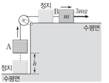
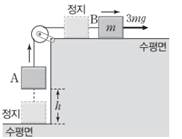

문제:
32. 그림과 같이 수평면에 정지해 있는 물체 A와 실로 연결되어 정지해 있는 질량이 m인 물체 B에 수평 방향으로 크기가 3mg인 힘이 작용하여 A, B가 등가속도 운동을 한다. A의 높이가 h일 때, 물체의 운동 에너지는 A가 B의 2배이다.
이에 대한 설명으로 옳은 것만을 <보기>에서 있는 대로 고르시오.
ㄱ. A의 질량은 2m다.
32. 그림과 같이 수평면에 정지해 있는 물체 A와 실로 연결되어 정지해 있는 질량이 m인 물체 B에 수평 방향으로 크기가 3mg인 힘이 작용하여 A, B가 등가속도 운동을 한다. A의 높이가 h일 때, 물체의 운동 에너지는 A가 B의 2배이다.
이에 대한 설명으로 옳은 것만을 <보기>에서 있는 대로 고르시오.
ㄱ. A의 질량은 2m다.